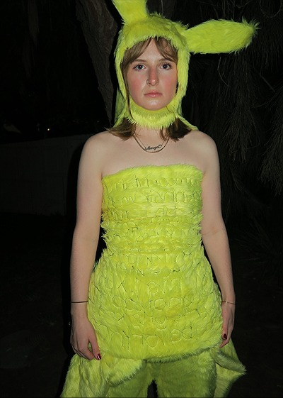
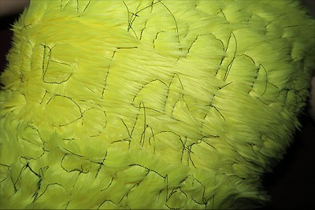
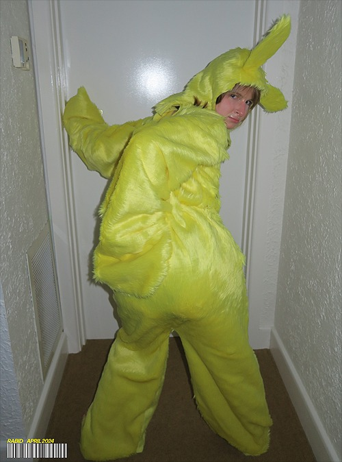
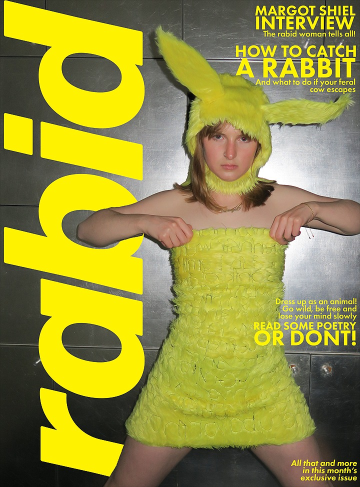
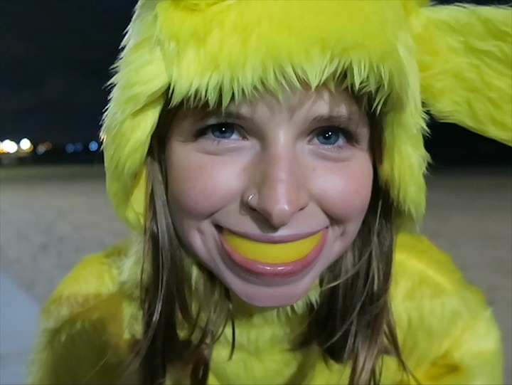

This portion of my development is an overview of a previous project, entitled Rabid, that I produced in semester 1, 2024, during my Image and Media Studio. While I have been working with textiles since I started school, I think Rabid is interesting because it is the first time that I combined text/typography and graphic design with my textile design. The technique I used to write on my fabric in Rabide is freehand machine embroidery. This is achieved my removing the foot of the sewing machine and moving the fabric beneath the needle while sewing. This process is super meditative and fun, but not super accurate and quite time intensive. It also is a lot harder to create or reference an actual typeface, rather than just your own handwriting.
This project is also one of the things that made me confident in my ability to produce large scale works, where a single story/character is explored and transformed by its presentation in different formats/mediums. The Rabid Woman character that I created for this series is a kind of alter ego of mine, and she also inspired my short story, Scratch Scratch, that cam to form the content of the words on my textiles. I think that revisiting and rehashing these old projects of mine, is a version of coyping/processing in an of itself - the designer evolving and revisiting.





